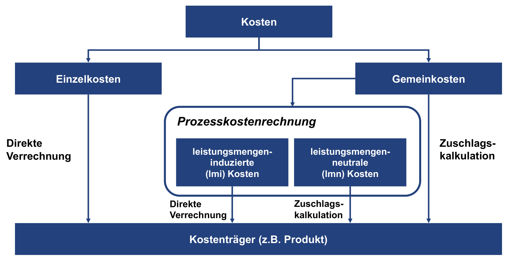

Prozesskostensätze: vom Vorgang zur Kundengruppe
Controlling · Kurs 95896 · WiSe 2026/27
Grundlagen
Prozesskostenrechnung verbindet Ressourcen mit Tätigkeiten und deren Inanspruchnahme. Zunächst werden Teilprozesse in Kostenstellen identifiziert und zu Hauptprozessen zusammengefasst. Danach werden geeignete Kostentreiber, deren Mengen und die zugehörigen Kosten bestimmt. Ein Prozesskostensatz ergibt sich aus Prozesskosten geteilt durch die zugehörige Prozessmenge.
Kostenwege unterscheiden
Einzelkosten bleiben direkt zurechenbar. Bei Gemeinkosten unterscheidet die Prozesssicht leistungsmengeninduzierte (lmi) und leistungsmengenneutrale (lmn) Kosten. Für lmi-Kosten wird eine Beziehung zur Prozessmenge angenommen; lmn-Kosten benötigen gegebenenfalls eine zusätzliche Verrechnungsregel. Die folgende Grafik zeigt die unterschiedlichen Wege zum Kostenträger.

Die zusätzliche Prozessstufe ersetzt nicht jede Zurechnungsannahme: Auch ein lmn-Zuschlag bleibt eine Verteilung. „Leistungsmengeninduziert“ bedeutet außerdem nicht automatisch, dass sämtliche zugerechneten Gehälter oder Abschreibungen bei einem zusätzlichen Vorgang kurzfristig steigen. Die Grafik lässt sich horizontal verschieben; alternativ: Grafik groß öffnen.

Rechentabelle: Drei Prozesse, drei Einheiten
Die drei Rechenzeilen folgen der Reihenfolge der Vorlesungsdarstellung. Deren Bruchrechnung wird hier in Eingangsgrößen, selbst berechneten Kostenpool und Satz aufgegliedert; es handelt sich nicht um eine unveränderte Originaltabelle.
Drei Prozesse, drei Einheiten
Notiere zuerst deinen Rechenweg. Ergebnisfelder bleiben leer. Beträge in Euro, auf zwei Dezimalstellen runden; Komma als Dezimalzeichen und Punkt als Tausendertrennzeichen (z. B. 2.850.000,00). Ein Minuszeichen kennzeichnet Verlust. Mobil: jede Tabelle intern nach rechts verschieben.
„Alle Felder prüfen“ kontrolliert jedes Feld unabhängig. Danach zeigt das Info-i Formel, eingesetzte Werte und Erklärung. Deine Eingaben werden weder überschrieben noch übertragen. Änderungen erfordern eine neue Prüfung.
| Aktivität | Personal + Abschreibungen (gegeben) | Jährliche Prozessmenge (gegeben) | Kostenpool (€) | Prozesskostensatz |
|---|---|---|---|---|
| Verarbeitete Zahlungen | 7.000.000 + 4.400.000 € | 28.500.000 | Rechenweg7.000.000 + 4.400.000 = 11.400.000 €. Personal und Abschreibungen werden zusammengeführt. |
Rechenweg(7.000.000,00 + 4.400.000,00) € / 28.500.000,00 = 0,40 €/Zahlung. Kostenpool durch passende Jahresmenge. |
| Anfragen über das digitale Servicecenter | 4.500.000 + 600.000 € | 1.000.000 | Rechenweg4.500.000 + 600.000 = 5.100.000 €. Personal und Abschreibungen werden zusammengeführt. |
Rechenweg(4.500.000,00 + 600.000,00) € / 1.000.000,00 = 5,10 €/Anfrage. Kostenpool durch passende Jahresmenge. |
| Kundenberatungsgespräche | 10.000.000 + 2.000.000 € | 2.000.000 | Rechenweg10.000.000 + 2.000.000 = 12.000.000 €. Personal und Abschreibungen werden zusammengeführt. |
Rechenweg(10.000.000,00 + 2.000.000,00) € / 2.000.000,00 = 6,00 €/Beratungsgespräch. Kostenpool durch passende Jahresmenge. |
Noch nicht geprüft · 6 Felder zum Selbstrechnen.
Einheitenprobe: Euro geteilt durch Zahlung ergibt €/Zahlung, nicht €/Konto. Addiere nicht die drei Sätze. Erst Nutzung × passender Satz ergibt addierbare Eurobeträge. Es gibt in diesem Pilotfall keinen zusätzlichen lmn-Zuschlag. Nutze die Sätze anschließend in der Kundengruppentabelle.
Fallstudie: drei Sätze, drei Einheiten
Für Zahlungen werden 7,0 Mio. € Personal und 4,4 Mio. € Abschreibungen zusammengeführt. Bei 28,5 Mio. Zahlungen sind das 11,4 / 28,5 = 0,40 € je Zahlung.
Das digitale Servicecenter kostet 5,1 Mio. € bei einer Million Anfragen: 5,10 € je Anfrage. Beratung kostet 12 Mio. € bei zwei Millionen Gesprächen: 6 € je Gespräch. Die Sätze dürfen nicht ohne ihre verschiedenen Einheiten miteinander verglichen oder addiert werden.
Eigenes Kontobeispiel
Ein Modellkonto nutzt jährlich 30 Zahlungen, vier digitale Anfragen und zwei Beratungen. Seine zugeordneten Kosten sind 30 × 0,40 + 4 × 5,10 + 2 × 6 = 44,40 €. Die Rechnung unterstellt vergleichbare Vorgänge innerhalb jedes Prozesses sowie passende Kosten- und Mengenperioden.
In der Bank-Pilotstudie werden keine lmn-Kosten zusätzlich verrechnet. Deshalb darf man das Ergebnis weder um einen erfundenen Zuschlag erweitern noch als vollständige Erfassung sämtlicher Bankkosten ausgeben. Spätere Kapitel behandeln die allgemeine lmn-Verrechnung genauer.
Lernstrecke: erklären, rechnen, hinterfragen
Plane etwa 25–35 Minuten ein. Bearbeite die Aufgaben zunächst ohne den oberen Text. Schreibe Rechenwege und Begründungen auf Papier; Lösungen erst danach öffnen. Die folgenden Varianten sind eigene Übungsfälle, keine offiziellen Klausuraufgaben.
1 · Den Kostenweg selbst erklären (4 Punkte)
Erkläre einer neuen Mitarbeiterin in vier bis sechs Sätzen, wie aus Ressourcenverbrauch Kosten eines Modellkontos werden. Unterscheide Kostenpool, Kostentreiber, Prozessmenge und Prozesskostensatz. Erkläre außerdem, warum ein Satz je Zahlung nicht mit einem Satz je Beratung addiert werden darf, die zugeordneten Eurobeträge aber schon.
Hinweis: Struktur, noch keine Lösung
Beginne bei einem Prozess und frage: Welche Kosten gehören dazu? Welche Aktivität bildet die Inanspruchnahme ab? Wie viele Einheiten gab es in derselben Periode? Wie viele nutzt das Konto?
Mustererklärung und Bewertungsraster
Ein Kostenpool bündelt die einem Prozess zugeordneten Kosten, beispielsweise 11,4 Mio. € für Zahlungen. Der Kostentreiber bildet dessen Inanspruchnahme ab; hier ist es die Anzahl der Zahlungen. Die Prozessmenge beträgt 28,5 Mio. Zahlungen derselben Periode. Kosten geteilt durch Menge ergeben 0,40 € je Zahlung. Erst die Multiplikation mit den Zahlungen eines Kontos ergibt dessen zugeordneten Eurobetrag. Euro je Zahlung und Euro je Beratung haben verschiedene Nenner und sind nicht direkt addierbar; nach Multiplikation mit den jeweiligen Nutzungsmengen sind beide Ergebnisse Eurobeträge derselben Periode.
Je ein Punkt: Kostenpool erklärt; Treiber und Menge unterschieden; Division und anschließende Multiplikation erläutert; Einheitenargument korrekt. Nur Begriffe aufzuzählen reicht nicht.
2 · Neuer Kontotyp: selbst rechnen (5 Punkte)
Ein Konto nutzt jährlich 45 Zahlungen, zwei digitale Anfragen und drei Beratungen. Nutze die oben hergeleiteten Sätze. Stelle vor der Rechnung eine allgemeine Formel auf und berechne die drei Teilbeträge sowie die Gesamtkosten. Was sagt das Ergebnis ausdrücklich nicht aus?
Hinweis zum Rechenweg
Für jeden Prozess gilt: Nutzung des Kontos × Satz des Prozesses. Prüfe, dass sich die Treibereinheit wegkürzt. Addiere erst die Eurobeträge.
Vollständige Lösung und Bewertung
Mit Zahlungssatz p, Anfragesatz a und Beratungssatz b gilt K = nₚ × p + nₐ × a + nᵦ × b. Hier: 45 × 0,40 = 18 €; 2 × 5,10 = 10,20 €; 3 × 6 = 18 €. Zusammen 46,20 € pro Konto und Jahr.
Das ist eine modellbasierte Kostenverrechnung, keine Aussage über kurzfristige Zusatzkosten oder einen vollständigen Gewinn. Erträge und weitere, nicht enthaltene Kosten fehlen. Je ein Punkt für allgemeine Formel, drei richtige Teilbeträge (zusammen ein Punkt), richtige Summe, Einheit/Periode und sachgerechte Abgrenzung. Eine richtige Zahl allein ergibt höchstens einen Punkt.
3 · Fehlerdiagnose statt Nachrechnen (4 Punkte)
Ein Kollege schreibt: „Die Sätze sind 0,40 + 5,10 + 6 = 11,50 €. Das Konto verursacht deshalb 11,50 € Kosten. Wenn wir eine Beratung streichen, sparen wir sicher 6 €.“ Finde zwei voneinander unabhängige Fehler, korrigiere sie und nenne eine zusätzliche Information, die du für eine Einsparentscheidung brauchst.
Hinweis
Unterscheide die Dimension einer Rechengröße von der Frage, ob zugeordnete Ressourcen tatsächlich abgebaut werden können.
Fehleranalyse und Bewertungsraster
Fehler 1: Die Sätze haben verschiedene Treibereinheiten; ihre Summe ist kein allgemeiner Kontokostensatz. Für den neuen Kontotyp müssen die Nutzungsmengen einbezogen werden, Ergebnis 46,20 € pro Jahr. Fehler 2: Verrechnete Durchschnittskosten sind nicht automatisch vermeidbare Kosten. Ein wegfallendes Gespräch kann zunächst nur freie Kapazität schaffen, während Gehälter unverändert bleiben. Für eine Einsparentscheidung braucht man beispielsweise Informationen über variable Fremdleistungen, anpassbare Personalstunden, den Zeithorizont oder eine alternative Nutzung frei werdender Kapazität.
Je ein Punkt für beide Fehler, korrigierten Kostenweg und eine entscheidungsrelevante Zusatzinformation. „Die Rechnung ist falsch“ ohne Erklärung erhält keinen Diagnosepunkt.
4 · Transfer: Was ändert sich bei weniger Nachfrage? (5 Punkte)
Die jährlichen Kosten des digitalen Servicecenters bleiben zunächst bei 5,1 Mio. €, die Anfragen sinken aber von einer Million auf 750.000. Alle anderen Prozesssätze und die Nutzung des neuen Kontotyps bleiben unverändert.
- Berechne den neuen durchschnittlichen Satz je Anfrage und die neue Kostenzuordnung des Kontos.
- Erkläre, warum der Kontobetrag steigt, obwohl dieses Konto nicht mehr Anfragen stellt.
- Beurteile die Aussage: „Jede Anfrage ist technisch aufwendiger geworden.“ Welche alternative Erklärung ist mit den Daten vereinbar?
- Welche Modellgrenze würdest du einer Führungskraft vor einer Preisentscheidung nennen?
Hinweis
Trenne Gesamtkosten, gesamte Bezugsmenge und individuelle Nutzung. Ein kleinerer Nenner kann einen höheren Durchschnitt erzeugen, ohne die Bearbeitung eines einzelnen Vorgangs zu verändern.
Lösung mit Interpretation (nicht nur Zahlen)
Der neue Satz beträgt 5.100.000 / 750.000 = 6,80 € je Anfrage. Dem Konto werden 18 + 2 × 6,80 + 18 = 49,60 € pro Jahr zugeordnet, also 3,40 € mehr als vorher. Der Anfragesatz steigt um ein Drittel, weil unveränderte Kosten auf drei Viertel der bisherigen Menge verteilt werden. Die zwei Anfragen des Kontos sind unverändert.
Eine technisch aufwendigere Bearbeitung ist damit nicht belegt. Mit den Daten ist ebenso vereinbar, dass Ressourcen kurzfristig gebunden sind und weniger ausgelastet werden. Der höhere Durchschnitt darf deshalb nicht ungeprüft als höherer vermeidbarer Aufwand oder zwingende Preiserhöhung interpretiert werden. Vor einer Preisentscheidung wären unter anderem Nachfragewirkung, Kapazitätsanpassung und relevante Zusatzkosten zu prüfen.
Je ein Punkt für neuen Satz, neue Zuordnung mit Differenz, Nennermechanismus, Widerlegung des unzulässigen Schlusses und entscheidungsbezogene Modellgrenze.
5 · Verständnisbilanz und Wiederholung
Die vier offenen Aufgaben ergeben 18 selbst bewertete Punkte, keine automatische Kompetenzdiagnose. Markiere für jede Teilanforderung: selbstständig gelöst / mit Hinweis / erst nach Lösung verstanden. Auch bei hoher Punktzahl: Eine nicht erklärte Modellgrenze bleibt ein offenes Lernziel.
- Schreibe deinen wichtigsten Fehler mit Ursache und korrektem Gegenargument auf.
- Rechne bei Rechenproblemen einen eigenen Kontotyp mit anderen Nutzungsmengen vollständig durch.
- Erkläre bei Verständnisproblemen einem gedachten Gegenüber den Unterschied zwischen Verrechnung und Einsparung, ohne auf den Text zu schauen.
- Bearbeite morgen Aufgabe 4 ohne Lösung erneut. Prüfe nach einigen Tagen mit eigenen Zahlen, ob du den Mechanismus noch erklären kannst.
Ergänzender Auswahlcheck
Begründung anzeigen
a folgt aus 11,4 Mio. € / 28,5 Mio. Zahlungen. c folgt aus 12 + 20,40 + 12. b ist falsch: Zahlung, Anfrage und Beratung sind verschiedene Kostentreibereinheiten.
Verwandte Lernseiten
Quelle und Abgrenzung
Controlling VL3.pdf – Learnweb (Hochschulzugang), Prof. Dr. Martin Artz, Winter 2026/27. Physische PDF-Seiten, hier gleich den gedruckten Seitenzahlen; gelesen am 19.10.2026.
Ablauf und Kostenwege → physische PDF-S. 12, 19–20.
Grafik → S. 19, gezielter Ausschnitt ohne Folientitel/Fußzeile, sämtliche Kostenwege und Beschriftungen erhalten.
Prozesskosten, Treiber, Mengen und Sätze → S. 13–15; keine lmn-Verrechnung in diesem Pilotfall → S. 13.
Eigenes Kontobeispiel, Perioden-/Homogenitätsannahmen und kurzfristige Entscheidungsgrenze → eigene Erläuterungen.
Lernstrecke, neuer Kontotyp, Fehlerszenario und Nachfragerückgang → eigene didaktische Aufgaben auf Basis der oben belegten Sätze; keine offiziellen Prüfungsaufgaben.
Einheitenhinweis: Die Fußnote auf S. 13 nennt 38.050 €; S. 5 weist die entsprechende GuV-Zahl in 1.000 € aus. Daher sind 38,05 Mio. € gemeint; die isolierte Fußnotenangabe ist missverständlich.
Interaktive Rechentabellen → physische PDF-S. 15 (drei Rechenzeilen, in Tabellenspalten aufgegliedert), Eingangsgrößen S. 13–14. Originalansichten am 22.10.2026 gelesen; eigenständiger HTML-Nachbau, Feldprüfung und Rechenhilfen sind didaktische Ergänzungen, keine offiziellen Aufgaben. Keine Folienbilder veröffentlicht.
Paraphrasierte Lernaufbereitung; Original und Extrakt bleiben privat.